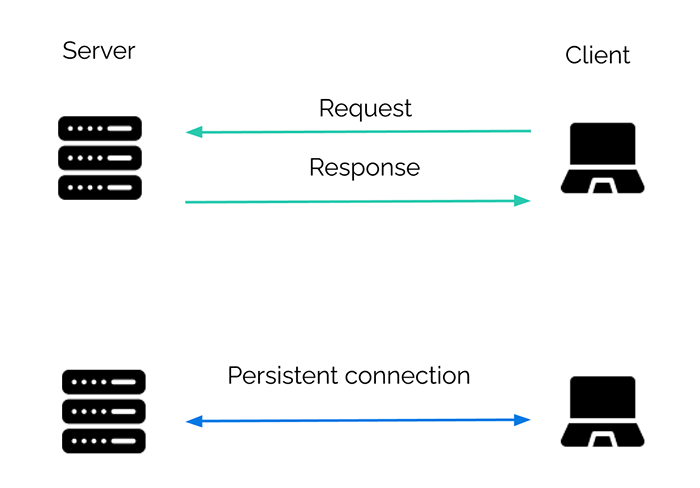
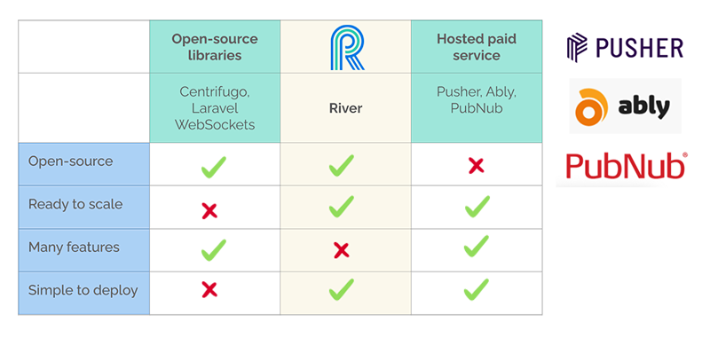
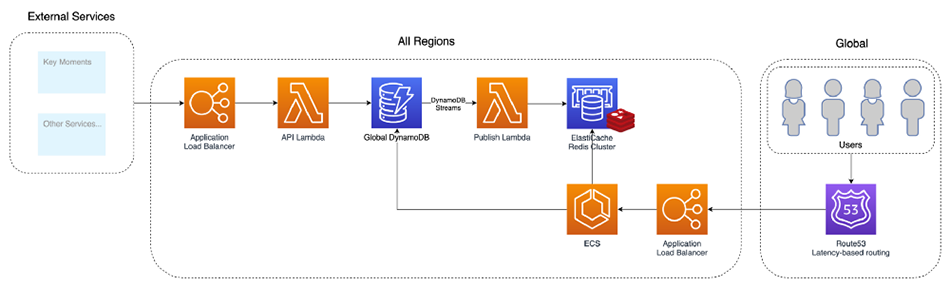
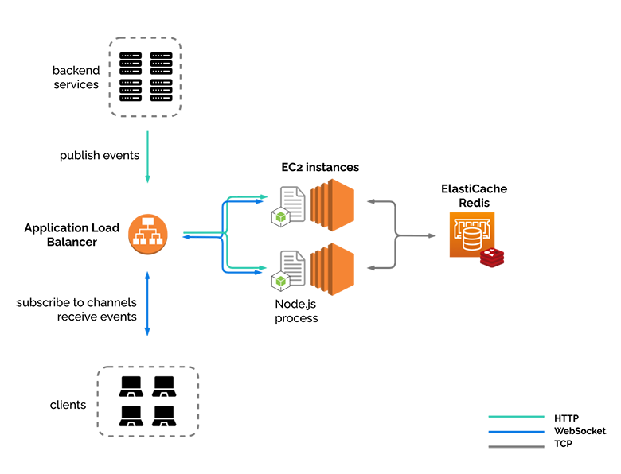
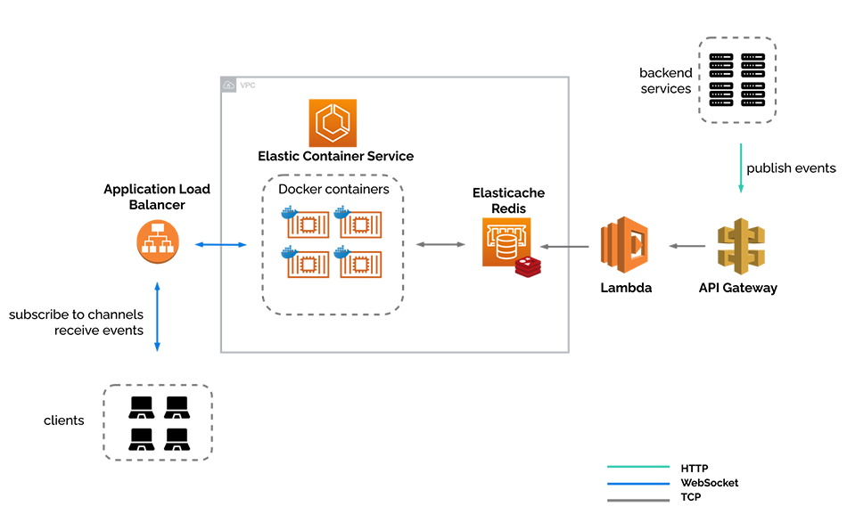
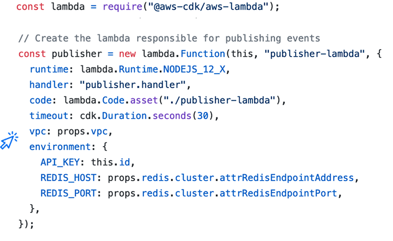
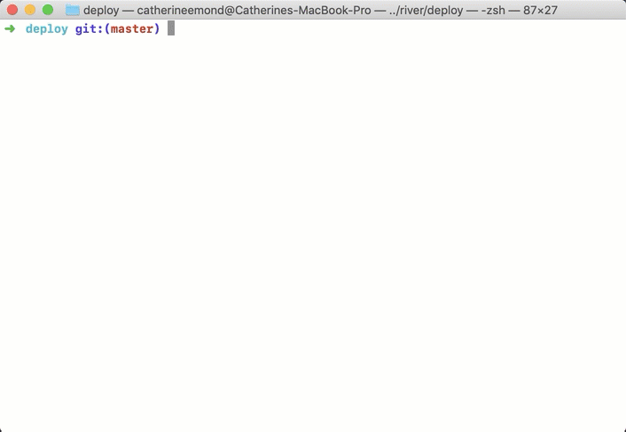
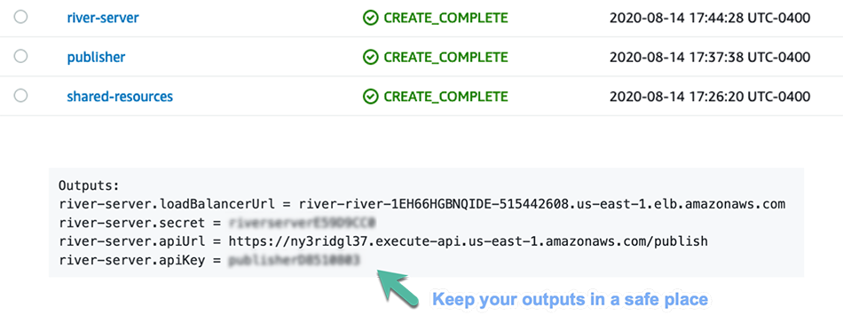
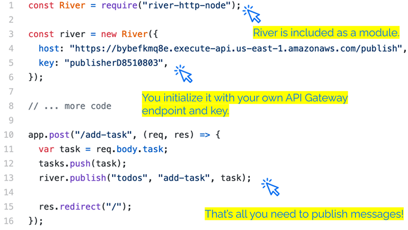
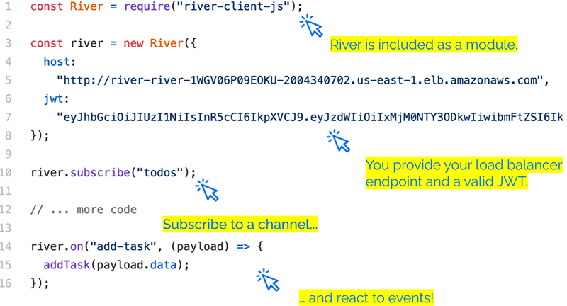

Case Study
1) What is Stagehand?
Stagehand is a drop-in solution that provides review apps for modern frontend applications. We are a framework that automatically manages review apps for your application’s GitHub repository on your own cloud infrastructure. We use AWS, GitHub Actions, and some Stagehand client-side code to set-up, deploy, manage, and teardown review apps for your frontend application.
All you have to do is install the Stagehand CLI via our NPM package and run our init command from your local repo. We will handle the rest. Then you will have review apps automatically deployed for you to view and share whenever you open a pull request on your GitHub repository.
In this case study, we describe what review apps are as well as their value for modern frontend applications. We then look over existing solutions for review apps and where Stagehand fits into the mix. Then we will look at how we built Stagehand as well as challenges we faced along the way. Finally, we will go over some future work we would like to develop.
2) What are review apps?
2.1) What is real-time in the context of web applications?
Real-time is about a fast exchange of messages. A change happens somewhere in our system, and other parts of the system should be notified as fast as possible. What "as fast as possible" means, though, varies quite a lot depending on the context. Are we talking about microseconds latency? Is a missed deadline considered a system failure? For us, the answer to these questions is: no. We are in the context of web applications: this is not about an airplane control system.
Even within the realm of web apps, some systems are much more sensitive to delays than others: gaming or financial stock trading are good examples. In this case, a higher latency can have serious consequences. These are sometimes called "firm" real-time.
"Soft" real-time, on the other hand, is much more flexible. In that case, a higher latency will result in a degraded user experience, not a system failure. Collaborative apps are a good example. One can think of a collaborative text editor, such as Google docs, a discussion forum like Slack, or a shared calendar. The idea is that the real-time application should update to the correct state without user intervention [1]. These are the type of applications we had in mind when building River.
2.2) How is real-time achieved?
In the past few decades, we have seen an evolution from hypertext documents and web pages to dynamic and interactive web applications. HTTP was not designed for web apps. HTTP was designed with simplicity in mind and is not an ideal choice for real-time communication [2].

If we think of the HTTP request-response model, "without user intervention" would mean "without the client sending a request". This is usually not an option. We want an open channel of communication through which messages can be sent between the server and the client, a bit more like an on-going conversation than a formal request. This bi-directional, message-based communication is such an appealing idea that it has given rise to a few different strategies and technologies over the years.
2.2.1) XHR Polling
The simplest form of XHR polling is sometimes called "short" polling: the client will simply make a request on a periodic interval to see if new data is available. There are, of course, quite a few downsides to this approach:
- The requests sent by the client are unnecessary if no new data is available. This can create extra load on the server.
- Every request and response sent will carry metadata overhead. For small and frequent messages, this is far from ideal.
-
Depending on the HTTP version used, the TCP connection may need to
be repeatedly established. This is usually avoided by using the
keepaliveconnection header to establish a persistent connection [4].
Long-polling attempts to improve the situation by having the server "wait" after receiving the HTTP request, allowing it to respond only when there are new events to be sent. While it is an improvement, the general impression - as stated in the RFC6202 [5] - is that long polling "strech[es] the original semantics of HTTP and that the HTTP protocol was not designed for bidirectional communication".
2.2.2) Server-Sent Events
Server-Sent Events allow server-to-client streaming of text-based data. While they work over HTTP, they deviate from the usual request-response cycle and allow a truly message-based communication. This is sometimes referred to as server "push" to contrast it with a client "pull". As the name implies, after the connection is established, it is a one-way flow of data: the client cannot send messages to the server over that channel. With that limitation in mind, SSEs work very well to deliver fast updates, such as push notifications. When considering SSE for River, the two main drawbacks were the unidirectional data flow and the limitation on the maximum number of open connections [6].
2.2.3) WebSockets
WebSockets are widely adopted and used by popular sites such as GitHub and Slack. They are also what we chose to use with River. They are not new: the RFC for the WebSocket protocol [7] came out in 2011, precisely to solve the challenges of real-time communication. They are now supported by all major browsers [8]. WebSocket is a distinct protocol allowing for a persistent TCP connection between server and client.
WebSockets allow for efficient two-way data communication through this open connection by minimizing metadata and avoiding the overhead of frequently opening and closing connections [9]. Even more interesting, WebSockets give developers a lot of flexibility regarding the format of the messages sent. This can be good or bad - it has been described as some kind of "free for all" [10] - but it allows us to layer on top of WebSockets higher-level protocols, such as the publish and subscribe model. This is something we leveraged when designing River and we will come back to it later.
Two major pain points when working with WebSockets are:
- Compatibility with existing infrastructure: WebSocket is a different protocol, distinct from HTTP.
- Scale and security: many of the existing components of the infrastructure (e.g. servers and load balancers) are built, configured, and maintained with HTTP in mind [11].
2.3) Is real-time hard?
We want to address one final question in this section: how hard is it to build a real-time application? The answer, obviously, depends on the requirements of the application. Does it require data persistence? Does it need to scale? How secure should it be?
Building a simple chat app is very easy to do: many open-source libraries make working with WebSockets easier. If an application developer wants to add real-time functionality to an existing codebase of a certain size, though, it could be another story. He might need to make many modifications to the code, and it can be worth considering putting that logic in a separate place. The same goes for building a resilient and scalable application: this is a new set of problems that could be difficult to handle if all the logic sits in one place. In the next section, we will explore the idea of a separate real-time service in more depth.
3) A separate service
3.1) A separate server
As we mentioned in the beginning, River is a “drop-in” real-time service. This means that River is a separate component meant to be added to an existing application. Any time we add an extra piece to a system, it brings in some additional complexity. It is a tradeoff that should be carefully considered and the need for a separate real-time service has to be justified. In this section, we want to start by looking more carefully at the drawbacks of using WebSockets that we mentioned in passing before.
In the previous section, we presented the idea of persistent connections and how different it is from the usual request-response cycle. What we haven’t mentioned yet is that our server - a process - is now responsible for maintaining the open WebSocket connections. A stateless request-response cycle like HTTP and persistent connections like WebSockets have different technical requirements. These, in turn, can influence the server's configuration and cause issues that will be amplified as the load on the server increases. This problem is often mentioned in the technical literature:
HTTP is optimized for short and bursty transfers. As a result, many of the servers, proxies, and other intermediaries are often configured to aggressively timeout idle HTTP connections, which, of course, is exactly what we don’t want to see for long-lived WebSocket sessions. [12]
Having a separate server dedicated to maintaining WebSocket connections allows us to offload the management of persistent connections from our main application server. Again, this is common wisdom, as expressed here by Armin Ronacher, the Flask framework's creator, in an article on lessons learned from using WebSockets:
Keep your WebSockets miles away from the rest of your application code. Keep them in a separate server if you can. They have completely different performance characteristics than your regular HTTP requests. [13]
This comes back to the well-known principle of separation of concerns: we have two different pieces of functionality, they do something different, and we should keep them in a separate place.
3.2) Multiple backend services
What if we need to work not only with one server but with multiple backend services? This is commonly referred to as a microservices architecture. Instead of working with one gigantic codebase, your application logic is split into multiple smaller services where each component can scale independently according to its needs.
If we want to add real-time functionality to such a system, does it mean that each backend service must manage both HTTP and WebSocket connections? This would look something like this:
Or probably more like this, since each backend service needs to maintain an open connection with each client if it wants to provide real-time functionality:
What we really want is a separate real-time component responsible for managing the WebSocket connections and providing real-time functionality:
The backend services can now send standard HTTP requests to the real-time service. In a sense, they are now decoupled from the clients, as the real-time service is responsible for sending the messages to the clients.
3.3) Where does the real-time service fit in?
At a very high-level, what are the pieces of a real-time application?
Real-time applications consist of clients, a real-time communication layer, and backend servers working together to achieve business objectives. [14]
We want to take a moment to go over a few communication patterns and see where that “real-time layer” fits in.
3.3.1) A browser-facing publish-subscribe system
We have mentioned before the terms “publish” and “subscribe” in the context of messaging. This is often referred to as the pub/sub messaging pattern. The exchange of messages can happen between backend services, or between the backend and the frontend. In all cases, it is a many-to-many relationship: multiple publishers can send events, while subscribers can subscribe to specific channels (sometimes called topics) to receive events from those channels. A middle layer allows the decoupling of publishers and subscribers: they do not need to be aware of each other. This layer simply needs to provide an interface for publishing, subscribing, and unsubscribing.
While the pub/sub pattern is often associated with Event-Driven Architecture in the context of backend services, River is not an internal message broker like Apache Kafka. We find event streaming to be a very powerful model, but we had a more modest goal in mind: a real-time service responsible for managing WebSocket connections. Thus, it is important to keep in mind that we are talking about a browser-facing pub/sub system. The backend services publish events to the real-time service, which sends them to the client-subscribers - in this case, browsers. Implemented as a custom protocol on top of WebSocket connections, publish/subscribe is widely used [15] and remains a powerful pattern with a few obvious advantages.
The pub/sub pattern:
- decouples the publishers from the subscribers
- allows multiple receivers for a single event
- allows a single client to subscribe to multiple channels
- provides developers with a simple interface for sending messages in a consistent format over the WebSocket protocol
3.3.2) The "triangular" pattern
The triangular pattern is a variation of the pub/sub pattern. Generally, events can be almost anything: a change in the database, or a message received from an external API. With this triangular pattern, messages sent by the client to the server over a normal HTTP request and response cycle are treated as events to be published. The real-time service is added to an existing application without the need to modify the existing HTTP communication. We will expand on this idea in the next section.
4) Adding real-time
In this section, we will look at what is needed to add real-time functionality to an existing application, by using a discussion forum as an example. A traditional discussion forum does not usually have real-time features. What are the steps needed to add real-time functionality to a discussion forum, such that a user doesn’t have to refresh her browser to see new messages?
4.1) Without River

The above diagram shows an existing discussion forum application. Of course, there are many clients, but we will look at just one at a time here for simplicity and clarity. Just like any other CRUD application, to add a new message to the forum, the client sends an HTTP POST request to the server. The server then validates the request, saves it to its database, and...
...sends back a response with a new webpage with the client’s new post. This is as expected, but what happens when a second client makes a post?
Here we see a second client making a new post to the discussion forum, but the first client can’t know about it without refreshing her browser. There is no open channel of communication between the server and the first client.
What would it look like if we did have an open channel of communication?
To be able to add real-time functionality to the application, we open a WebSocket connection between the client and server. We will use this WebSocket connection to send updates to the client when a new message comes in.
Now when “dogfan55”, the second client, sends her message declaring her love for dogs, the server is able to update the first client without any need for her to refresh her browser. This update happens via a WebSocket message sent over the open connection between the server and the first client.
So far we have talked about how to add real-time functionality to an application without adding any external pieces to our infrastructure, which can be a valid approach for many use cases. But River is a separate service. How does a separate service work with an existing application, like our discussion forum here?
4.2) With River
Now we see River in the picture. The discussion forum application still has its existing HTTP communication paths. We want to add real-time functionality as simply as possible, so we are not going to alter these paths at all. What is the first step that needs to happen?

First, the client needs to open a WebSocket connection with River. It is through this connection that the client will receive updates, without having to refresh her browser.
Second, the client needs to tell River which messages she wants to receive. River may be sending updates concerning many forums or sub-forums, and she doesn’t want to receive every new forum post, only those new posts for the forum she is currently viewing.
She is currently on the “dogs” forum, so she subscribes to the “dogs” channel.
The client makes a new forum post in the usual manner, via an HTTP POST request to the server, and the server saves the new forum post to its database.
Now, the server needs to somehow notify River of this new forum post in the “dogs” forum, so that all clients that are subscribed to the “dogs” channel can be given the update of the new forum post.
To do this, our server publishes to a specific channel, here the “dogs” channel, via an HTTP POST request to River.
We can think of this publishing as an event about which all subscribed clients will be notified.
Finally, River takes this publishing of an event, turns it into a WebSocket message, and sends it to all the clients that have subscribed to the “dogs” channel.
Here, again, we are showing just one client for clarity, but we can imagine many clients all looking at the “dogs” forum, and receiving this message in real-time.
4.3) Overall pattern
Now we can see the overall pattern of the “browser-facing publish-subscribe model” take shape. Our existing application does not modify its HTTP channels of communication, the application publishes events to River, and the clients open a persistent WebSocket connection and subscribe to, and receive events from River.
We can see the bi-directional nature of the communication between River and its clients. The need for bi-directional communication is the reason we chose to use WebSockets over Server-Sent Events. Server-Sent Events only permit one-way communication, from server to client. Clients need not only to receive messages, but also to freely send messages to subscribe to and unsubscribe from channels.

Of course we can have many clients, not just one client...
…and many backend services.
River is unconcerned with which clients are subscribing, and also unconcerned with which backend services are publishing. It simply accepts publish events on a specific channel, and broadcasts that event to subscribed clients.
5) Existing solutions
In the previous section, we described how a real-time service such as River fits in with an existing application. At this point, before going into how we actually built River, we want to say a word about some of the existing solutions. Once an application developer has decided that a separate real-time service would work well for the needs of his application, he has quite a few options.
5.1) Open-source solutions
Broadly speaking, the existing solutions can be divided into two categories. On one side, there are many open-source libraries to serve a very wide variety of needs. Centrifugo [16], for example, is a scalable real-time messaging server written in Go. It runs as a separate service and maintains persistent WebSocket connections with clients. It follows a very similar pattern to what we previously described and presents itself as a user-facing pub/sub server [17]. Its use case is very similar to ours. It has been tested at scale and is under active development. On the downside, while it has been used at scale, it is not out-of-the-box ready to scale. The deployment scenario is left to the application developer: while there are some good instructions on how to deploy and configure the server, that complexity is still in the developer's hands.
5.2) Commercial solutions
On the other side of this problem space, there are many profitable companies that offer hosted paid services. Pusher [18] is one of the major players in this space and it offers many advantages for application developers. It is very easy to use. It provides a simple web interface for creating real-time APIs, libraries for multiple languages, and strong guarantees. On the downside, it is not open-source and, depending on usage, it can be expensive. The free plan only supports up to 100 concurrent connections. To support 10,000 concurrent connections, Pusher charges $500 per month [19].
Looking at the available options, though, we thought there was a space in-between these two categories. The open-source solutions were great but difficult to deploy. The commercial solutions were easy to use but costly. So we decided to build a simplified open-source version of Pusher. Our main goals were to be easy to deploy and ready to scale - exactly what was missing from the open-source solutions we looked at. The trade-off we made was to keep it simple. We don’t offer many features beyond the core publish and subscribe functionality.

5.3) DAZN in-house WebSocket solution
There is another non-open-source solution we looked at and want to mention. DAZN [20] is a sports streaming company. We were interested in a specific problem they solved with their own in-house solution. The problem wasn’t the streaming itself of live events, but publishing live updates to millions of users eagerly waiting for this critical information. They looked at Amazon Web Services for a good solution and didn’t find something that matched their needs out-of-the-box. So they came up with their own solution and wrote a few good articles about it [21].
Their requirements were very similar to ours, so this piqued our interest. They needed to publish sports updates to users, allow users to subscribe to channels in order to receive the messages associated with a specific sports event, and perform with high-traffic on a global scale. The following diagram describes the infrastructure they chose for this specific solution, a system they call Pubby:

This was an inspiration for us while building River as we knew it had been tested in real-life, under high load, and proven robust. What we want to point out is simply the overall shape of the system. At the right, users subscribe and receive updates through the application load balancer. To the left, backend services can publish events. The center section is the real-time layer and the WebSocket server itself lives as a containerized application deployed through the AWS Elastic Container Service. For us, it was a validation of the use case we had in mind and a glimpse into the kind of infrastructure that could support such a use case. In the next section, we will describe how we designed River and the specific choices we made while building it.
6) Building River
In this section, we will discuss how we built River. From design choices, we will go through a piece-by-piece build of our infrastructure, and also describe one path that we did not follow.
6.1) Designing River
We wanted it to be easy to use, easy to deploy, and ready to scale. To achieve these goals, we had to make a few tradeoffs. First, River has a simple interface, and not many features or options. When River is deployed, there is no configuration.
River deploys on Amazon Web Services (AWS). Of course AWS is a very powerful platform, and is the major player in cloud services, controlling about 40 percent of the cloud market [22], but there are some downsides to working with AWS, too. One, obviously, is that we are now locked in to AWS. We can’t take an AWS architecture and port it to another cloud vendor like Google Cloud Platform. But probably the biggest downside that comes with working with AWS, and anyone who has worked with or used AWS can attest to this, is the complexity it brings. A platform that aims to abstract so much away from the developer is bound to have a lot of complexity.
This complexity produced some of our greatest challenges when building River.
6.2) Building, piece-by-piece
So far, we have looked at how River interacts with an existing application, and have explored this triangular pattern. Now let’s zoom in on River itself, and look at the components and resources that make up its internal infrastructure.
6.2.1) A Node.js process
At its heart, River is a Node.js process running a WebSocket server. That’s it! While a single process on a local machine can provide all the functionality and features of River, we had something else in mind. We built River to be resilient and ready to scale.
Here we see our same familiar triangular pattern, but turned on its side. We still have our three pieces, the backend services, the clients, and River, but here River is represented as a single Node.js process, which is where we started in our development. Notice that our Node.js process is not only accepting and holding WebSocket connections, but it is also accepting the publishing of events from the backend services, via HTTP POST requests.
Since we decided to work with AWS, we needed a place to put our Node.js process…
6.2.2) One EC2
To start with, we put it in an EC2 instance, AWS’s standard virtual private server.
At this point River has all the functionality that we have discussed so far, and can actually be the separate real-time service that we have been describing.
6.2.3) Another EC2
We knew we wanted to be able to have more than one instance of the River server running. One, for resiliency, such that if one server goes down, another is available while the first one gets back on its feet. And two, to be ready to scale horizontally, to be able to handle more traffic than one EC2 could reasonably handle.
But this second instance introduces new problems. How do the nodes (EC2 instances) communicate with each other? If an event gets published to one node, how does the other node know about it?
6.2.4) Redis pub/sub
To solve this first problem, we added the ElastiCache for Redis service, which is AWS’s drop-in replacement for Redis. Redis is usually thought of as a key-value cache, something that it does very well, but we are actually not using it as a cache. Redis also has a very powerful built-in publish-subscribe mechanism. In this case, the nodes are the actual publishers and subscribers, and Redis allows the nodes to communicate with each other.
We considered other internal pub/sub services, such as Kafka, or Amazon’s Simple Notification Service, but ultimately decided on Redis. Our server is leveraging the socket.io library for handling WebSocket connections, and we are using an adapter called “socket.io-redis” that makes working with socket.io on multiple nodes and Redis very straightforward and seamless.
Just to reiterate the point here: this is an example of an internal, or back-end service pub/sub. It is not the same pattern that River fits into that we have been talking about overall, which is that of a browser-facing pub/sub service.
We still have a problem on the other side of our nodes now. We don’t want to have two different URLs for accessing River, so…
6.2.5) Load balancer
We added a load balancer, in this case AWS's Application Load Balancer (ALB). ALB comes with native support for WebSockets, serves to distribute traffic between our nodes, and provides a single point of entry for our clients and services.

At this point we felt pretty happy about our system, but we noticed one issue, and that is the fact that our node processes are handling both WebSocket connections and HTTP requests for publishing events. We are mixing WebSockets and HTTP, and, as alluded to earlier, this might not be the best idea for some use cases.
Is there a way we can have a separation of concerns? Since Redis is acting as the publish-subscribe mechanism for our nodes, is there some way we can publish to Redis directly?
6.2.6) Publishing backchannel
To publish to Redis directly, we added this “backchannel”, as we like to call it, for publishing events via HTTP. Now River has two entry points, one for browser-based WebSocket connections, and one for services to publish events to River via HTTP. The WebSocket connections are now completely decoupled from the HTTP publish requests.
The API Gateway service exposes a public URL. When a publish event comes in via an HTTP POST request, the Lambda function validates this request, and sends a publish event to Redis. Redis then publishes the event to the node subscribers, and then on to our connected clients.
Now we have a pretty robust system, with a nice separation of concerns, but thinking about two of our goals, being easy to use and easy to deploy, we have an issue here. EC2 is a great service, and gives developers a lot of power and customization, but also comes with some burdens. Upon deployment, we need to apply security updates, and we need to make sure the correct version of Node.js is installed. On an ongoing basis, we need to apply further security updates, manage the logs, and just in general, all of the work that comes with managing servers.
We wanted to abstract all of this away for the users of River, so we decided to containerize our Node.js process, and move to a different AWS service.
6.2.7) Containerized
Now we have the final version of our infrastructure. We have moved from EC2 instances to Amazon’s Elastic Container Service (ECS). We have taken our WebSocket server, and put it in a Docker container, which allows us to focus solely on the business logic of River, and not concern ourselves with server maintenance at all. We no longer have to worry about Node.js version conflicts or logs filling up, and can simply deploy our Docker container without thinking about underlying dependencies.

We also put our internal infrastructure inside a Virtual Private Cloud. This allows us to provision a logically isolated section of the AWS Cloud, and creates a virtual network over which we have complete control. [23]
6.2.8) AWS Fargate
Elastic Container Service is a fully-managed container orchestration service. At its core, ECS runs Docker containers.
Our Node.js process lives inside this Docker container, which is stored on Docker Hub as an image, which is referenced in a task definition. The task definition contains information about how the container should be run, its allocated CPU and memory, port mappings, and environment variables, among other such things. The task definition is then referenced by a service definition. The service definition dictates how many tasks are run concurrently, for example if we want to have three identical Docker containers of our Node.js process running for scalability and reliability purposes, this would be spelled out in the service definition. Any auto-scaling policy is also referenced by the service definition, as well as things like re-starting tasks that have crashed.
- EC2-type lauch-type: customer-managed fleet of EC2 instances
- Fargate launch-type: AWS-managed fleet of EC2 instances
ECS has two launch-type choices, the EC2 launch type, and the Fargate launch-type. We chose to use the Fargate launch-type, which Amazon describes as “serverless compute for containers.” [24]
With the EC2 launch-type (which we did not choose) the developer still has to manage the instances on which ECS runs. The developer must provision and scale clusters, patch and update servers, and other tasks associated with server maintenance. In other words, the same problems we were trying to move away from when choosing a containerized approach.
With the Fargate launch-type, AWS abstracts all of this server infrastructure away. We only need to define how our containers should be run, and Fargate takes care of everything else. This allowed us to meet our goal for River of not only being easy to deploy, but easy to use as well.
Moving from a Node.js process on EC2 to a Docker container on ECS Fargate allowed us to abstract away server management, but this move brought some complexities along with it. We had a goal of making River easy to deploy, and while moving to ECS Fargate makes running River easier and maintenance-free, this switch made setting up River much more complex. When trying to automate the setup process to meet our goal of easy deployment, we faced some of our most significant challenges.
6.3) The road not taken
Now that River’s final infrastructure is in view, we would like to mention one path we did not take. While building River piece-by-piece, we moved towards AWS services that abstracted away as much infrastructure as possible. Would it be possible to go even further down this “serverless” path? With its seemingly infinite number of services for just about everything, does AWS provide a WebSocket service that we could use directly?
6.3.1) AWS WebSocket API
In late 2018 when WebSocket API was introduced as a feature on the venerable API Gateway service, AWS had this to say about WebSockets:
Historically, building WebSocket APIs required setting up fleets of hosts that were responsible for managing the persistent connections that underlie the WebSocket protocol. Now, with API Gateway, this is no longer necessary. API Gateway handles the connections between the client and service. It lets you build your business logic using HTTP-based backends such as AWS Lambda, Amazon Kinesis, or any other HTTP endpoint. [25]
This seems to be describing River’s infrastructure. If AWS provides this service, why didn’t we use it? Let’s see how a WebSocket API works.
When using a WebSocket API, clients connect via WebSockets and then a connection identifier is stored somewhere, usually in a DynamoDB table. In order for a message to be sent to this client, the client’s connection identifier is retrieved, and then an HTTP POST request containing this identifier is made to the WebSocket API, which triggers an outgoing message to this client.
So in other words, to send one WebSocket message to one client, we must make one HTTP request to the WebSocket API.
DAZN, with their internal solution we explored earlier, was also interested in WebSocket API, but they found it didn’t fit their use case.
There’s no way to broadcast messages to all connected clients with one API call. In fact, you need to make an API call for each connection you want to send a message to. Publishing a single update to 1m clients requires fetching all 1m connection IDs out of the database and making 1m API calls, which is a deal breaker. [26]
Recall that they are concerned with broadcasting sports updates to users, so this means there could be one football match to which one million clients are subscribed. To notify all of these clients about a new score, they wanted to be able to publish once, not one million times.
While River isn’t designed to operate on a global scale, we do have a similar use case, where one event can trigger a message to many, many clients. As we target small to medium web applications, a developer using River may encounter a situation where she needs to update one thousand users of one event.
River is able to do this with one API call.
7) Automating deployment
While building River, we faced significant challenges. That was only half the battle though, as we didn’t want to only build River for ourselves. We wanted to automate the deployment so that other people could easily use it.
7.1) Interacting with AWS
This diagram represents different ways to interact with Amazon Web Services, from manual towards automation. These are alternatives that application developers can choose depending on their needs. Many developers will be familiar with the web-based management console and it is a good entry-point in the world of AWS. It allows developers to create resources easily by clicking through the web interface. It was not an option for us, though, as we wanted to automate the deployment process. AWS web console is user-friendly, but it doesn’t make the process repeatable. For that, we needed to look at Software Development Kits (SDKs) and blueprints.
SDKs allow developers to write scripts in a familiar programming language, say JavaScript, to build their infrastructure. This is a great tool, but anyone who has worked with these scripts can attest that it is still a lot of work. Defining resources in a specific order and having them interact one with another is not always an easy task. In response to that, a new category of tools has emerged, often called blueprints.
The difference between SDKs and blueprints is the difference between “how” and “what”, between an imperative language and a declarative language. With an imperative language, we give specific instructions on how to achieve an outcome. With a declarative language, we simply describe what outcome we want. SQL is an example of a declarative language that many will be familiar with.
7.2) Creating a Lambda: an example
The tradeoffs between these different approaches will become clearer with an example.
7.2.1) With AWS CLI
This screenshot is taken from the AWS documentation and describes how to create a Lambda function using the CLI. The developer needs to first define the function itself and manually zip it, then run a long command from the terminal with many flags. In the last line of that long command, the Lambda function is assigned a role. This is often a major pain point when deploying AWS resources. Our infrastructure will have many different resources and these resources need to communicate in a secure way. To achieve that, AWS uses roles and permissions. In this specific example, the role was created by another long command that we haven’t included here. The developer also needs to create a policy to add permissions to that role and attach the policy to the role: more commands.
7.2.2) With AWS CloudFormation
Of course, the CLI was not an option for us as it doesn’t allow for automation. We looked next into these blueprints we mentioned before, with AWS CloudFormation templates being one example. These are JSON or YAML templates that allow developers to simply describe what resources they want and what these resources should look like. Developers will still need to describe roles and permissions, but it makes the deployment consistent and repeatable.
This was definitely a step forward for us, but on the downside, these templates are not very user-friendly. They can run over many hundreds of lines of code and most of these are simply default settings. Developers often end up copy-pasting boilerplate templates provided by AWS and looking through those hundreds of lines for the specific parameters they need to change.
7.2.3) With AWS Cloud Development Kit
While researching better options, we came across AWS Cloud Development Kit (CDK) [30]. It is an abstraction on top of AWS CloudFormation templates that makes them much easier to work with. AWS CDK is a very interesting concept as it allows developers to write code in a familiar language, e.g. JavaScript or Python, and model their infrastructure using Object-Oriented code. Under the hood, it will generate CloudFormation templates, preconfigured with sensible defaults. It makes infrastructure components easy to customize and easy to share. And it makes the whole infrastructure easy to deploy and easy to tear down.
On the downside, AWS CDK is very new (2018) and under active development. While the docs are good, there are no books yet on the topic and not a lot of good examples for more specific configuration requirements.
Overall, though, it worked really well for us and this is an example of what it looks like.

Another advantage is how easy it becomes for resources to interact one with another. As they are defined as JavaScript objects, they can easily communicate one with another in the code itself. The complexity of defining roles and permissions that we mentioned before is abstracted away from the developer.
The line vpc: props.vpc is all that is needed to include
the Lambda in a Virtual Private Cloud (VPC) that allows it to interact
with other resources belonging to the same private network. That VPC
itself was created as an object in the same file and it is easy for us
to refer to it from within the code itself. The roles and permissions
needed to allow the Lambda to participate in the VPC will be created
under the hood. While a lot of complexity is abstracted away, it is
not magic: the CloudFormation templates are auto-generated, but, if
needed, we can go over them and verify that everything is as it
should.
Our main deployment file is about 150 lines of code and that file generates more than a thousand lines of CloudFormation templates, these long YAML files. For us, this was a clear win.
8) How to use River
In the previous sections, we described how we built River and automated its deployment. What we want to emphasize at this point is that our goal was to take that complexity away and provide a tool that is easy to use. This is the topic of this concluding section.
8.1) Deployment
Deploying River is one command: after cloning the repository,
the developer only needs to type cdk deploy "*".

The end result is that all the resources needed will be created on the user's AWS account. The deployment process takes a while, as seen in the below screenshot, but it is meant to be done once. Similarly, it is one command to roll back all these changes, so it makes it easy for application developers to test if River is a good fit for their needs. This is one of the big advantages of a well-automated deployment process.

8.2) Libraries
As we mentioned in the beginning, River is meant to be used alongside an existing application. Besides deploying it, the developer will also need to interact with it. This is what the outputs are for. They provide the load balancer endpoint through which clients will establish the connection, the API Gateway endpoint needed to publish events, an API key, and a secret needed for security reasons.
We provide libraries with a clean and simple interface to make it easy to interact with River.
8.2.1) Server-side

This is an example Express app on the server-side. The application developer can simply include the River library as a module. He initializes it with his own API Gateway endpoint and key. Whenever the developer wants to publish a message, he simply needs to add one line of code. In this example, every time a POST request is received for the “add-task” path, that event will be published.
8.2.2) Client-side

Similarly, on the client-side, the developer can include River as a module. If he is not working in a WebPack-like environment, we also have a script that exposes a global variable. The developer only needs to provide his load balancer endpoint and a valid JSON Web Token.
Subscribing to any channel is one line of code. The developer can instruct River on how it should react to specific events with an event name and a callback function.
8.2.3) A simple demo

As the end result of these few lines of code, an existing application is now transformed into a real-time application. These are two different browser tabs and they represent two users that could live in different cities. When one user updates the state of the application, the UI gets immediately updated for both users, without the need to issue an HTTP request. On the functionality level, our goal is achieved. This is, of course, a very simple demo but the publish-subscribe functionality can be used in many scenarios where developers want to easily add real-time to an existing application.
8.3) Authentication
Previously we had mentioned the problem of how does this separate service know who is connecting to it? Our solution is to use JSON Web Tokens.
8.3.1) JSON Web Token
JSON Web Token (JWT) is an internet standard described in RFC 7519 [31]. It is described here as a “compact, URL-safe means of representing claims to be transferred between two parties.”
When River is deployed, a 256-bit secret key is generated, which is then used to digitally sign JWTs. These tokens are what allows River to be decoupled from the application server, but also able to authenticate clients. When a client connects to River, a valid JWT is expected.
Let’s look at an example of how these tokens might be generated and passed around among the three pieces of our “triangular” pattern.
8.3.2) Example workflow
After River generates the 256-bit secret, this secret is shared with the existing application.
Before attempting to connect to River, the client requests a JWT from the application server, and sends along its cookies.

And since this client is presumably logged in, the server will have some notion of who this client is from its cookies, and will verify that indeed this client should receive a JWT. The server then generates and returns a valid JWT, signed with the River secret.
The client then establishes a connection with River. Note that River allows a connection to be established from any client, but it expects a valid JWT within the first fifteen seconds of connection, otherwise the connection is terminated.
The client then sends a WebSocket message containing the valid JWT. River uses the secret to verify the JWT.
River sends back a message notifying the client of successful authentication. Finally, River adds this client to its pool of authenticated clients, which allows it to subscribe to channels and receive messages on those channels.
Note that this is just an example workflow, and River doesn’t make any demands on how JWTs are issued, passed around, or how their expiration time is set. This is left up to the application developer using River. River only requires a valid JSON Web Token within that first 15 seconds of connection.
8.4) Load testing
Recall that one of our goals for River was to be ready to scale. To know if we had actually met that goal, we needed to test River under some sort of load and attempt to simulate, as much as possible, real-world conditions of a small to medium web application.
8.4.1) Goals
To know if River could stand up to the demands of a small to medium web application, we set some goal numbers. We wanted to have:
- thousands of stable, concurrent, open WebSocket connections
- thousands of messages per second being sent by the server
- 100 new connections per second
8.4.2) Setup
To synthetically generate clients, we used the artillery.io testing library, which gives native support to socket.io, River’s underlying engine. We set up two EC2 instances to run artillery. We used two instead of one, because if we asked artillery.io to generate clients too quickly, it generated “high CPU” warnings, which could have led to erroneous test results. So we split the load of creating clients onto two EC2 instances.
Two containers was just an arbitrary number we picked, so we could extrapolate how much load the system could handle for a given number of containers. In our task definition for the container, we can specify how many virtual CPUs and memory to give our container. We chose one virtual CPU and two gigabytes of memory.
To have our server generate lots of WebSocket messages, we used the concept of a “presence channel”. This is a special kind of channel, where, when a client subscribes, this subscription event prompts the server to send a message to all the existing subscribers on the channel.

In the above diagram, we see a fourth subscriber on the left, causing the server to send a message to each of the three existing subscribers. One can imagine, as the number of subscribers grows, the number of messages being sent each second grows very quickly. For example, the 1,000th subscriber to this presence channel will prompt the server to send 999 messages, and if we are generating many, many clients every second, we can see that there will be a lot of messages flying around once we have many clients connected and subscribed.
8.4.3) Tuning the task definition
At first the test was resulting in a lot (3,000 out of 10,000) of XHR Polling errors once above about 7,000 connections. This meant that the connections were dropping and the socket.io clients were falling back to polling, but the polling was failing.
To remedy this, we increased the "nofile"
ulimit parameters of the container, allowing more open
file descriptors, since each new connection results in a new one [32]. ECS gives a soft limit default of 1024 and a hard limit default of
4096, so it makes sense that we were seeing connection errors as we
closed in on 7,000 connections with two tasks (containers) running.
ulimits were increased to the following:
"ulimits": [
{
"name": "nofile",
"softLimit": 50000,
"hardLimit": 65536
}
]
Once this was updated, the test ran without any errors.
8.4.4) Results
- 20,000 concurrent connections without errors
- to start, 100 new connections/second
- at end, 15-20 new connections/second
- at peak, servers sending “presence channel” messages at a rate of 300,000 messages/second
Once we adjusted the ulimits parameters, we were able to support 20,000 concurrent connections, without any errors. At the beginning of the test, River was able to add 100 new connections per second, but by the time we got to the end of the phase of the test where we were adding clients, this rate decreased to about 15 new connections per second, probably due to the large number of presence channel messages flying around at that point.
During the peak of the presence channel messages, we estimate these were being sent at the rate of 300,000 messages per second. This may sound like a lot of messages, but keep in mind that these are very lightweight, text-based messages, around 37 bytes each. Also note that these are not HTTP request-response cycles, but messages being sent over an existing TCP connection, our WebSocket connection.
Despite not reaching the goal of a steady addition of 100 users per second, we felt that we met our overall goal for River to be useful as a real-time service within the context of small to medium web applications.
9) Future work
We are proud of what we have accomplished with River. It fills in a gap in the real-time-as-a-service space by providing an easy-to-deploy and robust infrastructure able to handle up to 20,000 concurrent connections with zero errors. Of course, if you're planning on building the next Netflix, River would not be the right choice. But for small to medium-sized applications looking for an easy way to add real-time functionality, River is a great fit.
That being said, we do have a backlog of improvements that we plan to work on in the future.
Encrypted Websockets, out-of-the-box
AWS's Application Load Balancer service, the endpoint where clients connect via WebSockets, does not come with TLS out of the box. To enable encrypted WebSockets, a developer using River would need to add his custom domain and encryption keys to the ALB service. This is a straightforward task, but we would like to add an option during deployment to automate this.
Leverage AWS for better security
Right now we have an API key and secret for authentication, but we could use some AWS services to provide stronger security for both the API Gateway, and the secret that validates JSON Web Tokens. We could leverage the AWS Cognito service as an identity provider for JSON Web Token authorization for the API Gateway. AWS also has a service called “Secrets Manager”, that would allow a rotating secret for River’s WebSocket server.
Message history cache
Imagine if a user lost her WebSocket connection for a short period of time, like going between cell towers, or a train going through a tunnel. Then when she reconnects, she picks up with River right where she left off, not by accessing the application’s database, but by accessing River’s cache of recent messages.
10) References
- https://pragprog.com/titles/sbsockets/real-time-phoenix/
- https://hpbn.co/brief-history-of-http/
- https://hpbn.co/websocket/#performance-checklist
- A keepalive connection is the default since HTTP/1.1, see https://hpbn.co/brief-history-of-http/
- https://tools.ietf.org/html/rfc6202#section-2.2
- MDN on SSE. The limit per browser is set to 6 open connections. This is not an issue when using SSE with HTTP/2, since HTTP/2 allows multiplexing, see https://www.infoq.com/articles/websocket-and-http2-coexist/
- https://tools.ietf.org/html/rfc6455
- https://caniuse.com/#search=WebSockets
- https://learning.oreilly.com/library/view/websocket/9781449369262/
- https://shapeshed.com/api-design-for-an-event-driven-world/
- https://www.infoq.com/articles/websocket-and-http2-coexist/
- https://hpbn.co/websocket/#performance-checklist
- https://lucumr.pocoo.org/2012/9/24/websockets-101/
- https://pragprog.com/titles/sbsockets/real-time-phoenix/
- https://pusher.com/docs/channels/library_auth_reference/pusher-websockets-protocol#subscription-events, https://www.pubnub.com/docs/platform/messages/publish, https://www.ably.io/documentation/core-features/channels
- https://centrifugal.github.io/centrifugo/
- https://centrifugal.github.io/centrifugo/getting_started/
- https://pusher.com/
- https://pusher.com/channels/pricing
- https://www.dazn.com
- https://medium.com/dazn-tech/aws-serverless-websockets-at-scale-8a79cd5a9f3b, https://medium.com/dazn-tech/introducing-pubby-our-custom-websockets-solution-c5764e3a7dcb
- https://en.wikipedia.org/wiki/Amazon_Web_Services
- https://aws.amazon.com/vpc/
- https://aws.amazon.com/ecs/
- https://aws.amazon.com/blogs/compute/announcing-websocket-apis-in-amazon-api-gateway/
- https://medium.com/dazn-tech/introducing-pubby-our-custom-WebSockets-solution-c5764e3a7dcb
- https://www.manning.com/books/amazon-web-services-in-action
- https://docs.aws.amazon.com/lambda/latest/dg/gettingstarted-awscli.html
- https://docs.aws.amazon.com/AWSCloudFormation/latest/UserGuide/aws-resource-lambda-function.html
- https://aws.amazon.com/cdk/
- https://tools.ietf.org/html/rfc7519
- https://centrifugal.github.io/centrifugo/blog/scaling_websocket/